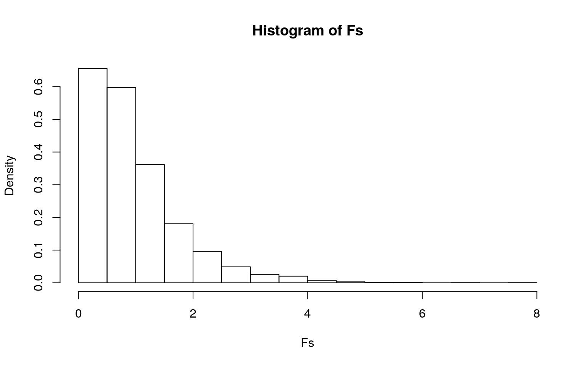
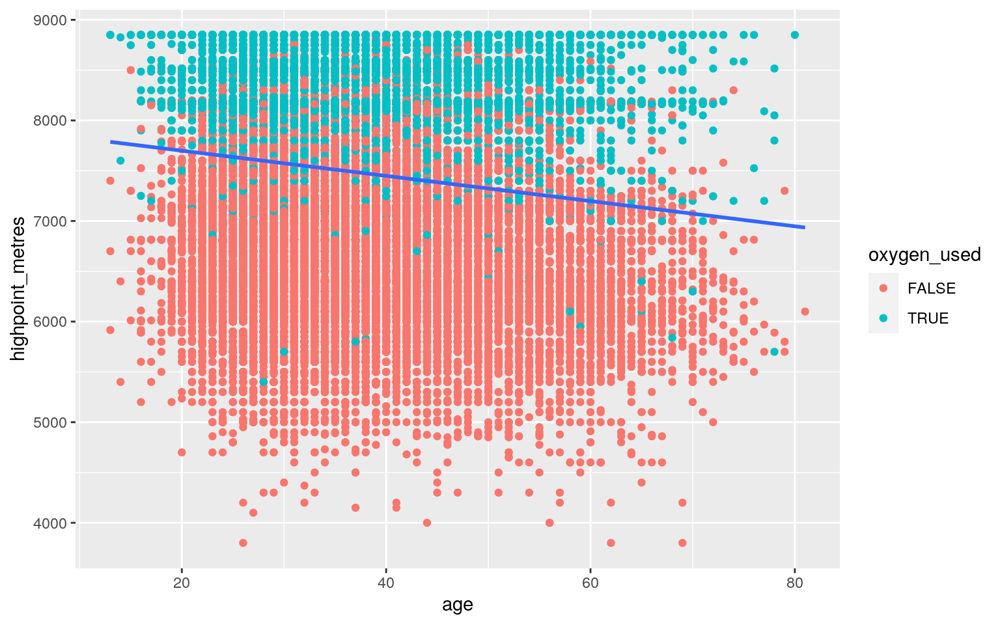
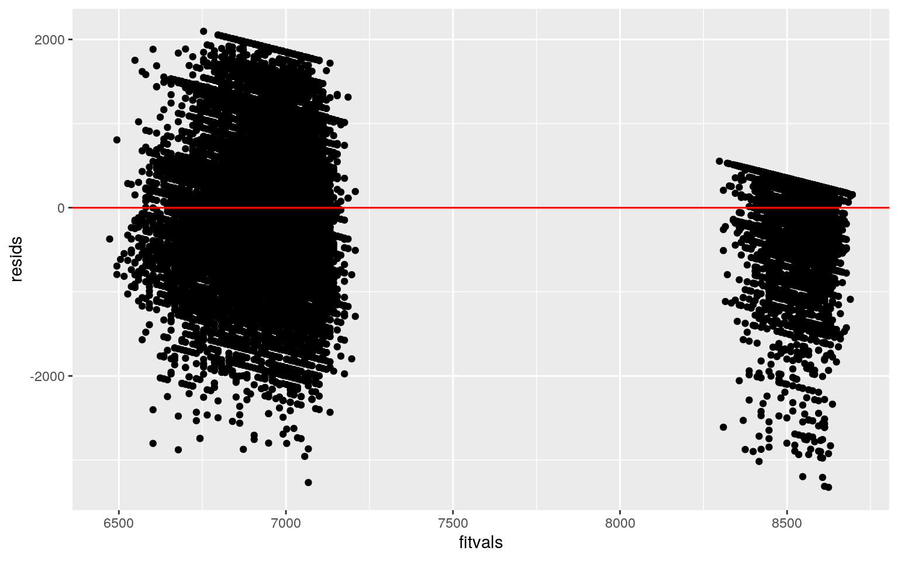
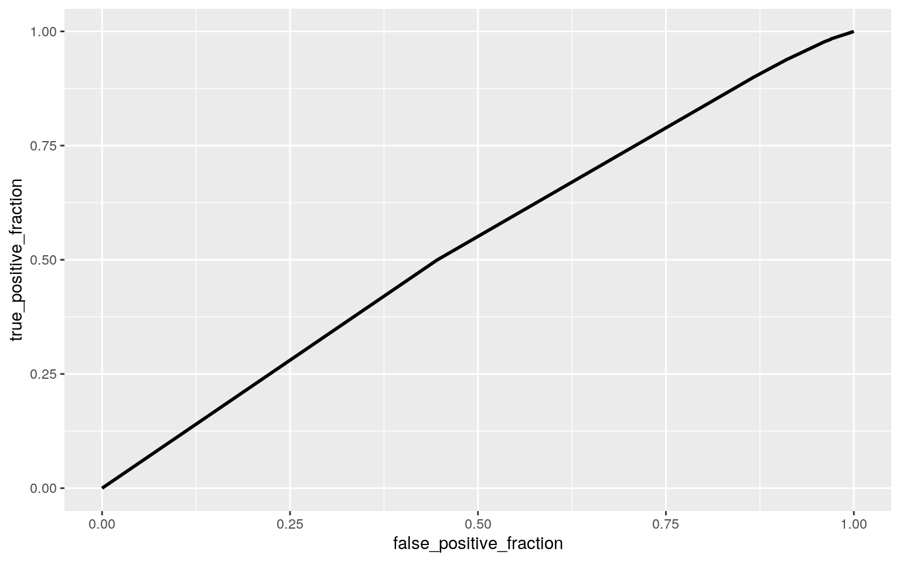
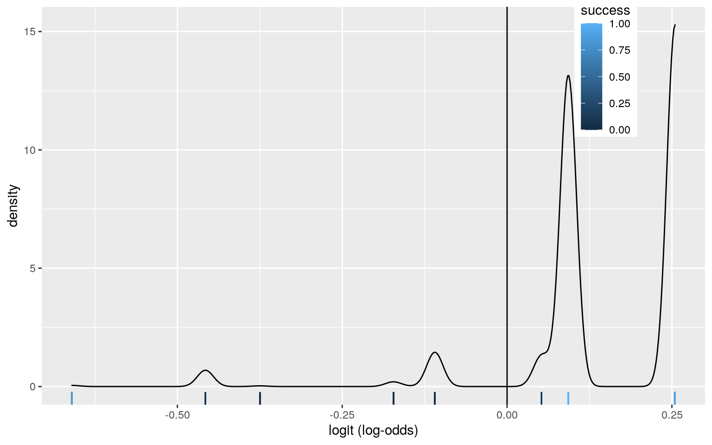
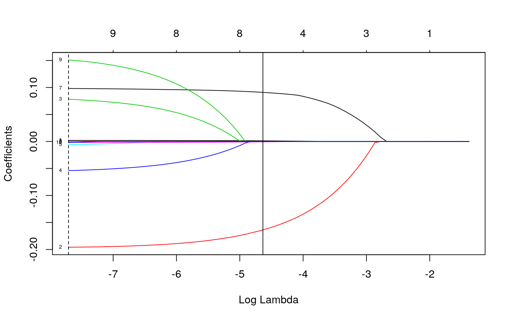

library(tidyverse)
members <- readr::read_csv('https://raw.githubusercontent.com/rfordatascience/tidytuesday/master/data/2020/2020-09-22/members.csv')
#Forming binary variable and cleaning
members <- members %>% mutate(success = ifelse(success == "TRUE", 1, 0)) %>%
mutate(died = ifelse(died == "TRUE", 1, 0)) %>%
select(-expedition_id, -death_cause, -death_height_metres, -injury_type, -injury_height_metres) %>%
na.omit() %>% filter(season != "Unknown")
head(members)## # A tibble: 6 x 16
## member_id peak_id peak_name year season sex age
citizenship expedition_role hired
## <chr> <chr> <chr> <dbl> <chr> <chr> <dbl> <chr> <chr>
<lgl>
## 1 AMAD7830… AMAD Ama Dabl… 1978 Autumn M 41 France
Deputy Leader FALSE
## 2 AMAD7830… AMAD Ama Dabl… 1978 Autumn M 40 France Exp
Doctor FALSE
## 3 AMAD7830… AMAD Ama Dabl… 1978 Autumn M 25 France
Climber FALSE
## 4 AMAD7830… AMAD Ama Dabl… 1978 Autumn M 41 France
Climber FALSE
## 5 AMAD7830… AMAD Ama Dabl… 1978 Autumn M 29 France
Climber FALSE
## 6 AMAD7910… AMAD Ama Dabl… 1979 Spring M 37 W Germany
Climber FALSE
## # … with 6 more variables: highpoint_metres <dbl>,
success <dbl>, solo <lgl>, oxygen_used <lgl>,
## # died <dbl>, injured <lgl>This dataset was obtained from Github’s 2020 archive of tidytuesday posts. The members dataset includes information regarding Himalayan expeditions from 1905 to 2019 to more than 465 peaks in Nepal. The name of each variable is reflective of what it is measuring, but the highest point reached by the climber (highpoint_metres), whether or not the expedition was successful (success), and whether or not oxygen was used (oxygen_used) are the main studied variables. The tidied dataset contains 16 variables and 52,385 observations.
#MANOVA test
man1 <- manova(cbind(success, died, highpoint_metres) ~ season, data = members) #1 MANOVA
summary(man1)## Df Pillai approx F num Df den Df Pr(>F)
## season 3 0.21691 1360.8 9 157137 < 2.2e-16 ***
## Residuals 52379
## ---
## Signif. codes: 0 '***' 0.001 '**' 0.01 '*' 0.05 '.' 0.1
' ' 1summary.aov(man1) #3 ANOVAs## Response success :
## Df Sum Sq Mean Sq F value Pr(>F)
## season 3 52.6 17.5278 70.754 < 2.2e-16 ***
## Residuals 52379 12975.7 0.2477
## ---
## Signif. codes: 0 '***' 0.001 '**' 0.01 '*' 0.05 '.' 0.1
' ' 1
##
## Response died :
## Df Sum Sq Mean Sq F value Pr(>F)
## season 3 0.28 0.092279 6.5927 0.000189 ***
## Residuals 52379 733.16 0.013997
## ---
## Signif. codes: 0 '***' 0.001 '**' 0.01 '*' 0.05 '.' 0.1
' ' 1
##
## Response highpoint_metres :
## Df Sum Sq Mean Sq F value Pr(>F)
## season 3 1.021e+10 3403446900 3824.7 < 2.2e-16 ***
## Residuals 52379 4.661e+10 889864
## ---
## Signif. codes: 0 '***' 0.001 '**' 0.01 '*' 0.05 '.' 0.1
' ' 1members %>% group_by(season) %>%
summarize(mean(success), mean(died), mean(highpoint_metres))## # A tibble: 4 x 4
## season `mean(success)` `mean(died)`
`mean(highpoint_metres)`
## <chr> <dbl> <dbl> <dbl>
## 1 Autumn 0.518 0.0135 7051.
## 2 Spring 0.559 0.0144 7911.
## 3 Summer 0.451 0.00267 6593.
## 4 Winter 0.384 0.0275 6813.pairwise.t.test(members$success, members$season, p.adj = "none") #18 t tests!##
## Pairwise comparisons using t tests with pooled SD
##
## data: members$success and members$season
##
## Autumn Spring Summer
## Spring < 2e-16 - -
## Summer 0.0091 2.7e-05 -
## Winter < 2e-16 < 2e-16 0.0246
##
## P value adjustment method: nonepairwise.t.test(members$died, members$season, p.adj = "none")##
## Pairwise comparisons using t tests with pooled SD
##
## data: members$died and members$season
##
## Autumn Spring Summer
## Spring 0.36397 - -
## Summer 0.07943 0.05603 -
## Winter 6e-05 0.00018 0.00038
##
## P value adjustment method: nonepairwise.t.test(members$highpoint_metres, members$season, p.adj = "none")##
## Pairwise comparisons using t tests with pooled SD
##
## data: members$highpoint_metres and members$season
##
## Autumn Spring Summer
## Spring < 2e-16 - -
## Summer < 2e-16 < 2e-16 -
## Winter < 2e-16 < 2e-16 8.6e-05
##
## P value adjustment method: noneA one-way MANOVA test was performed in order to determine if the highest point reached by the climber, whether or not they succeeded, or whether or not they died showed a mean difference depending on the season of the expedition. The results suggested that at least one of the above variables showed a mean difference. 3 ANOVAs were conducted and it was determined that the success of the expedition, whether or not the climber died, and the highest point reached all showed significant differences across seasons. Post-hoc t-tests were carried out for each variable to determine which seasons differ. A total of 22 tests were carried out when studying these relationships. The probability of encountering a type I error was equal to 1-(0.95)^22 = 0.6765. The overall error rate was kept to 5% using the Bonferroni correction (0.05/22) = 0.002273. When examining the results of the pairwise t tests, it’s clear that the success of the climbers is significantly affected by the season of the expedition except when comparing Autumn to Summer. Whether or not the climber died is also significantly affected by season, but only when comparing Autumn to Winter. Finally, the highest point reached by the climber was significantly effected by each season. The chosen dataset does not meet assumptions of the MANOVA test, as the covariance between any of the dependent variables is not equal.
obs_F <- 3824.7
Fs <- replicate(5000, {
new <- members %>% mutate(highpoint_metres = sample(highpoint_metres))
SSW <- new %>% group_by(season) %>%
summarize(SSW = sum((highpoint_metres - mean(highpoint_metres))^2)) %>%
summarize(sum(SSW)) %>% pull
SSB <- new %>% mutate(mean = mean(highpoint_metres)) %>% group_by(season) %>%
mutate(groupmean = mean(highpoint_metres)) %>%
summarize(SSB = sum((mean - groupmean)^2)) %>%
summarize(sum(SSB)) %>% pull
(SSB/3) / (SSW/52379)
})
hist(Fs, prob = T)
mean(Fs>obs_F)## [1] 0A randomization test was performed in order to determine if the variable season significantly affects the maximum height reached by climbers. If the variables are unrelated, a distribution of simulated F values would be relatively consistent. H0: All groups (seasons) have the same means HA: The mean differs for different groups Considering that none of the F statistics generated during the randomization were greater than the observed F value of 3824.7, we can reject the null hypothesis meaning that there is a significant difference in the highpoint reached by climbers depending on the season.
fit <- lm(highpoint_metres ~ age * oxygen_used, data = members)
summary(fit)##
## Call:
## lm(formula = highpoint_metres ~ age * oxygen_used, data
= members)
##
## Residuals:
## Min 1Q Median 3Q Max
## -3324.1 -419.5 27.9 320.9 2096.4
##
## Coefficients:
## Estimate Std. Error t value Pr(>|t|)
## (Intercept) 7348.2998 14.2400 516.031 < 2e-16 ***
## age -10.8124 0.3671 -29.453 < 2e-16 ***
## oxygen_usedTRUE 1424.1649 24.6460 57.785 < 2e-16 ***
## age:oxygen_usedTRUE 4.8761 0.6466 7.541 4.75e-14 ***
## ---
## Signif. codes: 0 '***' 0.001 '**' 0.01 '*' 0.05 '.' 0.1
' ' 1
##
## Residual standard error: 704.1 on 52379 degrees of
freedom
## Multiple R-squared: 0.543, Adjusted R-squared: 0.543
## F-statistic: 2.075e+04 on 3 and 52379 DF, p-value: <
2.2e-16members %>% ggplot(aes(x = age, y = highpoint_metres)) +
geom_point(aes(color = oxygen_used)) + geom_smooth(method = 'lm', se =F)
The highest point that climbers reached was predicted using their age and whether or not oxygen was used. The resulting linear regression model suggests that the height reached by climbers is significantly affected by their age, whether or not they used oxygen, and the interaction between these variables. As climbers increase in age by 1 year, the highest point reached is expected to drop by 10.81 meters. If oxygen is used, the highest point reached is expected to increase by 1424.17 meters. As climbers increase with age, they are expected to increase their height reached by 4.88 meters if oxygen is used.
library(lmtest)
library(sandwich)
resids <- fit$residuals
fitvals <- fit$fitted.values
ggplot() + geom_point(aes(fitvals, resids)) +
geom_hline(yintercept = 0, color = "red") #linearity NOT met
ks.test(resids, "pnorm", mean = 0, sd(resids)) #normality NOT met##
## One-sample Kolmogorov-Smirnov test
##
## data: resids
## D = 0.0932, p-value < 2.2e-16
## alternative hypothesis: two-sidedbptest(fit) #homoskedasticity NOT met##
## studentized Breusch-Pagan test
##
## data: fit
## BP = 4413.6, df = 3, p-value < 2.2e-16summary(fit)$coef[, 1:2]## Estimate Std. Error
## (Intercept) 7348.29980 14.2400428
## age -10.81238 0.3671106
## oxygen_usedTRUE 1424.16491 24.6460377
## age:oxygen_usedTRUE 4.87609 0.6466347coeftest(fit, vcov = vcovHC(fit))[, 1:2]## Estimate Std. Error
## (Intercept) 7348.29980 15.8248421
## age -10.81238 0.4064994
## oxygen_usedTRUE 1424.16491 20.6660604
## age:oxygen_usedTRUE 4.87609 0.5497499The fitted values were plotted against residual values to test for linearity. The non-random aggregation of points suggests that linearity is not met. A one-sample Kolmogorov-Smirnov test suggests that normality is not met (p < 0.001). A Breuch-Pagan test suggests that heteroskedasticity is present (p < 0.001). Robust standard errors were used to determine the results of the adjusted regression, and the results are seen above. The changes in standard error are indicative of the adjustments made as a result of homoskedasticity violations.
##Bootstrapped Standard Errors
#residual resample
resids <- fit$residuals
fitvals <- fit$fitted.values
resid_resamp <- replicate(5000, {
new_resids <- sample(resids, replace = TRUE)
members$new_y <- fitvals + new_resids
fit <- lm(new_y ~ age * oxygen_used, data = members)
coef(fit)
})
coeftest(fit)[, 1:2] #standard## Estimate Std. Error
## (Intercept) 7348.29980 14.2400428
## age -10.81238 0.3671106
## oxygen_usedTRUE 1424.16491 24.6460377
## age:oxygen_usedTRUE 4.87609 0.6466347coeftest(fit, vcov = vcovHC(fit))[, 1:2] #robust## Estimate Std. Error
## (Intercept) 7348.29980 15.8248421
## age -10.81238 0.4064994
## oxygen_usedTRUE 1424.16491 20.6660604
## age:oxygen_usedTRUE 4.87609 0.5497499resid_resamp %>% t %>% as.data.frame() %>% summarize_all(sd) #bootstrapped using resamp of resids## (Intercept) age oxygen_usedTRUE age:oxygen_usedTRUE
## 1 14.31119 0.369018 24.78432 0.6517855The same regression model was run using bootstrapped standard errors. This process was done by resampling the residuals of the initial model. The bootstrapped standard errors are closer in value to the original standard errors than the robust values previously calculated.
library(lmtest)
library(tidyverse)
fit2 <- glm(success ~ sex + season, data = members, family = "binomial")
coeftest(fit2)##
## z test of coefficients:
##
## Estimate Std. Error z value Pr(>|z|)
## (Intercept) -0.109515 0.030746 -3.5619 0.0003681 ***
## sexM 0.202476 0.030943 6.5435 6.011e-11 ***
## seasonSpring 0.161838 0.017863 9.0600 < 2.2e-16 ***
## seasonSummer -0.265303 0.104653 -2.5351 0.0112422 *
## seasonWinter -0.550487 0.060785 -9.0564 < 2.2e-16 ***
## ---
## Signif. codes: 0 '***' 0.001 '**' 0.01 '*' 0.05 '.' 0.1
' ' 1probs <- predict(fit2, type = "response")
table(predict = as.numeric(probs > 0.5), truth = members$success) %>% addmargins## truth
## predict 0 1 Sum
## 0 2190 1748 3938
## 1 22122 26323 48445
## Sum 24312 28071 52383(2190 + 26323) / 52385 #Accuracy## [1] 0.54429726323 / 28071 #Sensitivity## [1] 0.93772932190 / 24312 #Specificity## [1] 0.0900789726323 / 48445 #Precision## [1] 0.5433584A logistic regression model was constructed to predict the outcome of the binary variable ‘success’, based on the gender of the climber and the season of the expedition. The log-odds of successfully completing the expedition increases by 0.2025 if the climber is a male, meaning the odds of success increases from 0.8963 to 1.097. The odds of success increases for the season of spring, but decreases during summer and especially during winter. The computed model is 54.4% accurate and can predict that a climber is successful during their expedition 93.8% of the time. The model predicts when climbers do not complete the expedition 9% of the time, and the percentage of climbers predicted to succeed who actually do is equal to 54.3%.
library(plotROC)
ROCplot<-ggplot(members)+geom_roc(aes(d=success,m=probs), n.cuts=0)
ROCplot
calc_auc(ROCplot)## PANEL group AUC
## 1 1 -1 0.5330819members$logit<-predict(fit2,type="link")
#hideous
members %>% ggplot() +
geom_density(aes(logit,color=success,fill=success), alpha=.4) +
theme(legend.position=c(.85,.85)) + geom_vline(xintercept=0) +
xlab("logit (log-odds)") +
geom_rug(aes(logit,color=success))
The resulting ROC plot suggests that the model is not great at predicting the success of climbers based on their gender and the season of the expedition. This is due to overlap between the TPR and FPR. The AUC is equal to 0.5331, which further proves the ineffectiveness of the model.
class_diag<-function(probs,truth){
if(is.numeric(truth)==FALSE & is.logical(truth)==FALSE) truth<-as.numeric(truth)-1
tab<-table(factor(probs>.5,levels=c("FALSE","TRUE")),truth)
prediction<-ifelse(probs>.5,1,0)
acc=mean(truth==prediction)
sens=mean(prediction[truth==1]==1)
spec=mean(prediction[truth==0]==0)
ppv=mean(truth[prediction==1]==1)
f1=2*(sens*ppv)/(sens+ppv)
#CALCULATE EXACT AUC
ord<-order(probs, decreasing=TRUE)
probs <- probs[ord]; truth <- truth[ord]
TPR=cumsum(truth)/max(1,sum(truth))
FPR=cumsum(!truth)/max(1,sum(!truth))
dup<-c(probs[-1]>=probs[-length(probs)], FALSE)
TPR<-c(0,TPR[!dup],1); FPR<-c(0,FPR[!dup],1)
n <- length(TPR)
auc<- sum( ((TPR[-1]+TPR[-n])/2) * (FPR[-1]-FPR[-n]) )
data.frame(acc,sens,spec,ppv,auc)
}fit3 <- glm(success~year + season + sex + age + hired +
highpoint_metres + solo + oxygen_used, family = "binomial", data = members)
probs <- predict(fit3, type = "response")
table(predict = as.numeric(probs > 0.5), truth = members$success) %>% addmargins## truth
## predict 0 1 Sum
## 0 16657 6752 23409
## 1 7655 21319 28974
## Sum 24312 28071 52383(16657 + 21319) / 52383 #Accuracy## [1] 0.72496821319 / 28071 #Sensitivity## [1] 0.759467116657 / 24312 #Specificity## [1] 0.685134921319 / 28974 #Precision## [1] 0.7357976The logistic regression model is 72.5% accurate and can predict whether a climber is successful or not 75.9% of the time. The model predicts when climbers do not complete the expedition 68.5% of the time, and the percentage of climbers predicted to succeed who actually do is equal to 73.6%.
k=10
data <- members %>% sample_frac
folds <- ntile(1:nrow(data),n=10)
diags<-NULL
for(i in 1:k){
train <- data[folds!=i,]
test <- data[folds==i,]
truth <- test$success
fit3 <- glm(success~year + season + sex + age + hired +
highpoint_metres + solo + oxygen_used, data = members, family="binomial")
probs <- predict(fit, newdata=test, type="response")
diags<-rbind(diags,class_diag(probs,truth))
}
summarize_all(diags,mean)## acc sens spec ppv auc
## 1 0.5358801 1 0 0.5358801 0.6979117A 10-fold cross-validation suggests that the model is 53.6% accurate, meaning that it can predict whether or not an expedition is successful 53.6% of the time based on the selected variables. The sensitivity is equal to 1, and specificity equal to 0. The AUC value is equal to 0.6979, which is much higher than before.
library(glmnet)
y<-as.matrix(members$success)
x<-model.matrix(success ~ year + season + sex + age + hired +
highpoint_metres + solo + oxygen_used, data = members)[,-1]
head(x)## year seasonSpring seasonSummer seasonWinter sexM age
hiredTRUE highpoint_metres soloTRUE
## 1 1978 0 0 0 1 41 0 6000 0
## 2 1978 0 0 0 1 40 0 6000 0
## 3 1978 0 0 0 1 25 0 6000 0
## 4 1978 0 0 0 1 41 0 6000 0
## 5 1978 0 0 0 1 29 0 6000 0
## 6 1979 1 0 0 1 37 0 6814 0
## oxygen_usedTRUE
## 1 0
## 2 0
## 3 0
## 4 0
## 5 0
## 6 0cv <- cv.glmnet(x,y)
{plot(cv$glmnet.fit, "lambda", label=TRUE); abline(v = log(cv$lambda.1se)); abline(v = log(cv$lambda.min),lty=2)}
cv<-cv.glmnet(x,y,family="binomial")
lasso<-glmnet(x,y,family="binomial",lambda=cv$lambda.1se)
coef(lasso)## 11 x 1 sparse Matrix of class "dgCMatrix"
## s0
## (Intercept) -22.068589662
## year 0.006606588
## seasonSpring -0.911604433
## seasonSummer .
## seasonWinter .
## sexM .
## age -0.005004226
## hiredTRUE 0.505342931
## highpoint_metres 0.001272165
## soloTRUE .
## oxygen_usedTRUE .fit4 <- glm(success~year + season + age + hired + highpoint_metres, family = "binomial", data = members)
k=10
data <- members %>% sample_frac
folds <- ntile(1:nrow(data),n=10)
diags<-NULL
for(i in 1:k){
train <- data[folds!=i,]
test <- data[folds==i,]
truth <- test$success
fit4 <- glm(success~year + season + age + hired + highpoint_metres, data = members, family="binomial")
probs <- predict(fit, newdata=test, type="response")
diags<-rbind(diags,class_diag(probs,truth))
}
summarize_all(diags,mean)## acc sens spec ppv auc
## 1 0.5358802 1 0 0.5358802 0.6979071Performing a LASSO on the model retained only the year, season, age, hired, and highpoint variables. Performing another 10-fold cross-validation yields similar results to before, with only the AUC changing slightly.